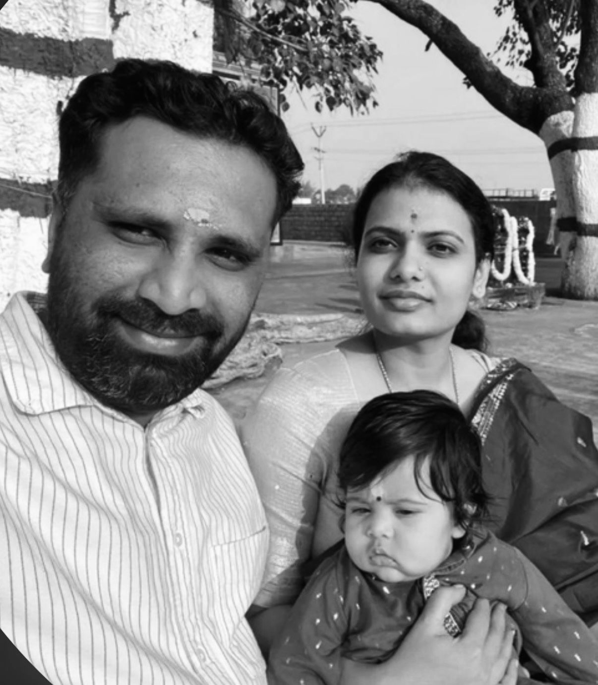

Here’s to many more years of laughter, kindness, and togetherness. Knowing you both is a gift.
When I first met you both, I never imagined that the bond we shared would grow into such a close and meaningful friendship. Beyond lessons and classrooms, you became a source of comfort, strength, and inspiration in my life. I’m deeply grateful for your guidance, your constant support, your kindness, and the quiet care you show in everything you do.
You stand as a reminder that love is not just something spoken about — it is something lived and felt. Through you, I’ve learned that admiration and love can exist together in the same space, creating a bond that is both beautiful and deeply inspiring.
With AV’s arrival, your story feels even more complete — a beautiful reflection of a love that continues to grow with time. Watching you both step into this new chapter as parents adds another layer of warmth and meaning to everything you already share.
That little man is incredibly lucky to be surrounded by such patient hearts, gentle strength, and endless love. The way you nurture, support, and stand beside one another shows that family is built not only through moments of joy, but through the quiet everyday acts of care that make a house feel like home.
